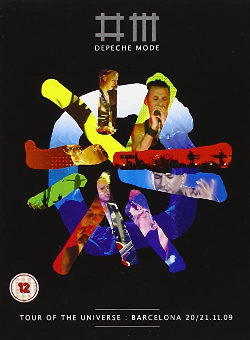
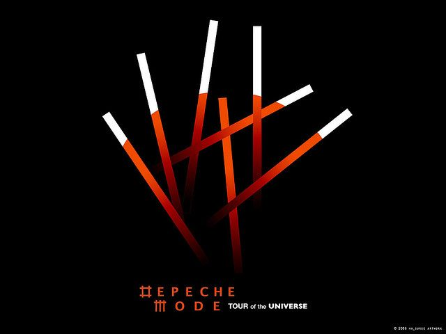

La primera gira de Depeche Mode se desarrolló íntegramente
en Reino Unido. Se realizaron 19 conciertos.
Esta gira no presentaba ningún álbum, ya que Depeche
Mode aún no había editado su primer disco. El repertorio
mezclaba temas antiguos de Composition of Sound y algunos
que verían la luz con el álbum Speak & Spell.
Mouldy Old Dough (interpretada en las primeras presentaciones, reemplazando a Big Muff)
Secrets (Solo en las primeras presentaciones)
Radio News (interpretada en la mitad de la gira, no fue grabada en vivo o para un álbum)
Mirror Is Standing (Autor desconocido, interpretada en las primeras presentaciones )
Mamma Mia (Cover de Abba, interpretada en las primeras presentaciones)
Sunday Morning (Compuesta por Vince Clarke, interpretada en las primeras presentaciones)
Shout (Interpretada una vez)
1981 Tour
La segunda gira sirvió para poner en escena el primer
álbum de la banda Speak & Spell en 68 conciertos.
En esta gira Depeche Mode actuó por primera vez en
Francia, Bélgica, Países Bajos y Alemania.
See You Tour es la tercera gira de la banda.
El éxito del sencillo See You animó a realizar
esta gira y terminar el segundo álbum,
aún en construcción. La gira tuvo 39 conciertos,
y DM actuó por primera vez en España, Suecia y
Luxemburgo; además de visitar por primera vez el
continente americano haciendo conciertos en Estados
Unidos y Canadá
Esta gira presentó el segundo álbum de DM,
titulado A Broken Frame. La gira tuvo 47 conciertos y
se alargó hasta mayo de 1983. Irlanday Dinamarca
fueron visitados por primera vez, además de los primeros
conciertos en Asia, visitando Japón, Tailandia y Hong Kong.
Presentando el álbum Construction Time Again
llega la quinta gira,
visitando por primera vez Italia. Un total de 48
conciertos son realizados hasta mediados de 1984
La primera gira a gran escala, Depeche Mode hace 101 conciertos
en todo el mundo para llevar en volandas su álbum de éxito
Music for the Masses. Checoslovaquia, Austria y
Alemania Oriental vieron por primera vez a Depeche
Mode en directo.
Durante seis meses del año 1990 se estuvo presentando
el álbum Violator alrededor del mundo. La banda debutó
en Australia y realizó un tour de 88 conciertos en total
96 conciertos en el año 1993 para presentar
su aclamado Songs of Faith
and Devotion. La banda visitó por primera vez
Portugal, República Checa (como país independiente) y México.
El Exotic Tour de 1994 no presentó ningún álbum nuevo,
simplemente fue una continuación al Devotional Tour,
pero con repertorio distinto, puesta en escena distinta,
etc. 62 conciertos que hicieron debutar a la banda en
Sudáfrica, Filipinas, Singapur, Brasil, Argentina,
Chile y Costa Rica. Tras esta gira Depeche Mode ya
había visitado los cinco continentes.
Tras la edición de Ultra en 1997 no se realizó
ninguna gira por el estado de salud de David Gahan.
Un año más tarde, y con la excusa de la edición del
recopilatorio The Singles 86-98, el grupo sale a la
carretera a recordarle al mundo sus grandes éxitos.
Fueron 65 conciertos y Depeche Mode actuó por primera
vez en Estonia, Letonia, Rusia y Finlandia.
Depeche Mode inicia el nuevo milenio presentando
su álbum Exciter. La gira del año 2001 se compuso
de 83 conciertos visitando por primera vez Lituania,
Turquía y Croacia.
I Feel Loved (no fue interpretado en todas las fechas)
Personal Jesus
World Full of Nothing (solo en el último concierto)
Home
Clean
Condemnation
Black Celebration
Never Let Me Down Again
Touring the Angel
Entre 2005 y 2006, Depeche Mode realiza su
gira más larga hasta ese momento superando
a la mítica gira
Tour for the Masses. Un total de
124 conciertos que permiten a la banda visitar
por primera vez Eslovaquia, Eslovenia, Bulgaria y Rumanía.
John the Revelator (no interpretado en todas las fechas)
I Feel You
Behind the Wheel
World in My Eyes
Personal Jesus
Enjoy the Silence
Shake the Disease
Leave in Silence
It Doesn't Matter Two
Somebody
Photographic
Just Can't Get Enough
Never Let Me Down Again
Tour of the Universe
Desde 2009 hasta 2010 se vuelve a realizar una gran
gira. 102 conciertos, que pudieron ser más si no se
hubieran cancelado 17 por motivos de salud. La banda
actúa por primera vez en Israel, Colombia, Perú y Ucrania.

IMPORTANTE: Para ver este video, debe tener instalada la extensión "Touch VPN - Secure and unlimited VPN Proxy"
para Google Chrome. Este video le explicará de mejor manera:

Canciones Interpretadas
Primera, Segunda y Tercera Manga
In Chains
Wrong
Hole to Feed
Walking in My Shoes
It's No Good
A Question of Time
Precious
Fly on the Windscreen
Jezebel
Little Soul
A Question of Lust
Home
Judas
Come Back
Miles Away/The Truth Is
Peace
Policy of Truth
Fragile Tension
In Your Room
I Feel You
In Sympathy
Policy of Truth
Enjoy the Silence
Never Let Me Down Again
Stripped
Somebody
Shake the Disease
A Question of Lust
Master and Servant
Stripped
Strangelove
Behind the Wheel
Personal Jesus
Waiting for the Night
Cuarta Manga
In Chains
Wrong
Hole to Feed
Walking in My Shoes
It's No Good
A Question of Time
Precious
World in My Eyes
Fly on the Windscreen
Freelove
Clean
Dressed in Black
Sister of Night
Jezebel
Insight
Judas
Home
Miles Away/The Truth Is
Come Back
Policy of Truth
In Your Room
I Feel You
Enjoy the Silence
Never Let Me Down Again
Somebody
A Question Of Lust
Dressed In Black
One Caress
Stripped
Behind the Wheel
Personal Jesus
Waiting for the Night
Delta Machine Tour
Depeche Mode presenta su álbum Delta Machine
desde 2013 hasta 2014 con 108 conciertos.
Hubo cuatro cancelaciones por motivos ajenos
al grupo. La banda visitó por primera vez Serbia,
Bielorrusia y Emiratos Árabes Unidos.
Condemnation Tema acústico interpretado por Martin Gore
Just Can't Get Enough
I Feel You
Never Let Me Down Again
Tercera manga
Welcome to My World
Angel
Walking in My Shoes
Precious
Black Celebration
Stripped
Policy of Truth
Should Be Higher
In Your Room
Should Be Higher
Policy of Truth
In Your Room
Tema interpretado por Martin Gore
The Child Inside
Home
Slow
Blue Dress
Tema interpretado por Martin Gore
Shake the Disease
But Not Tonight
Judas
Blue Dress
Heaven
Behind the Wheel
Soothe My Soul
A Pain That I'm Used To (Jacques Lu Cont Remix)
A Question of Time
Enjoy the Silence
Personal Jesus
Encore
Tema interpretado por Martin Gore
Home
Shake the Disease
Condemnation
Leave in Silence
Somebody
But Not Tonight
Judas
Halo (Goldfrapp Remix)
Just Can't Get Enough
I Feel You
Never Let Me Down Again
Encore 2
Goodbye Se incluye como último tema en Berlín el 27/11/2013
Global Spirit Tour
La gira se anunció en conferencia de prensa en Milán el día 11
de octubre de 2016 como apoyo de su álbum de estudio
Spirit. Acerca del álbum, previo a su publicación
David Gahan indicó en entrevista que buena parte
de Spirit estaba hecha para ser tocada en concierto,
algo no hecho desde 1994, pues a partir del álbum Ultra
de 1997 comenzaron a tocar más bien solo parte de los
álbumes a promocionar, optando principalmente por los
temas más populares de su apogeo entre 1986 y 1993,
aunque solo cinco temas de la colección han aparecido
en los conciertos. El Global Spirit Tour se convirtió
en la gira más larga, con 130 fechas.